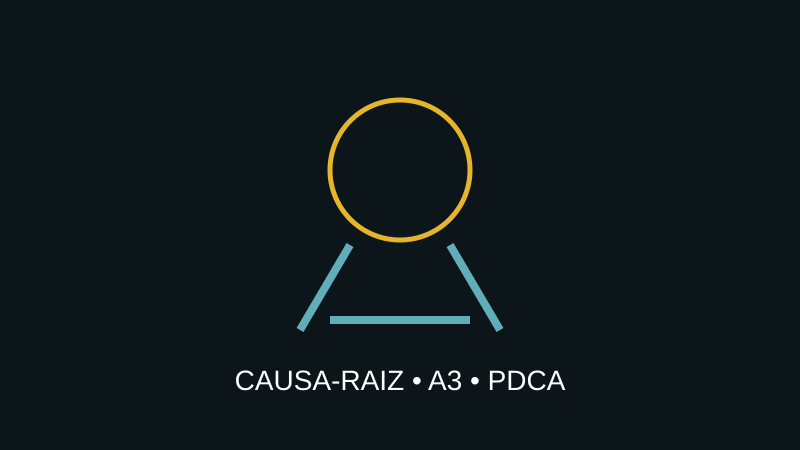

Seu problema volta todo mês? Descubra a causa-raiz antes de gastar mais.
Estruture o problema, encontre as causas que realmente explicam o efeito e transforme correção emergencial em solução sustentável.

Apagar incêndio não é resolver problema
Quando uma empresa responde a falhas com retrabalho, horas extras, descontos, substituições ou “jeitinhos”, ela pode estar tratando o efeito e preservando a causa. A recorrência consome dinheiro e ainda cria a falsa sensação de que o problema é inevitável.
Como a solução funciona
Começamos definindo claramente o problema, seu impacto, frequência e evidências. Depois estratificamos os dados e utilizamos ferramentas como Pareto, Ishikawa e 5 Porquês. Quando necessário, análises estatísticas ajudam a separar correlação de causa provável.
- Problem Statement e escopo;
- Project Charter e objetivo;
- Pareto e estratificação;
- Ishikawa e 5 Porquês;
- plano de ação e responsáveis;
- verificação de eficácia e padronização.
Quando este serviço faz sentido?
Quando reclamações, devoluções, defeitos, atrasos, falhas de atendimento, erros administrativos ou perdas operacionais continuam acontecendo apesar das tentativas de correção.
Se ainda não está claro onde estão as maiores perdas, comece pelo diagnóstico de eficiência operacional. Se o problema é complexo e exige investigação quantitativa, ele pode evoluir para um projeto DMAIC.
Resultado esperado
Mais do que uma lista de ações, você terá uma lógica de causa e efeito, evidências, responsáveis, prazo e critérios para verificar se a solução funcionou.
Qual problema sua empresa está cansada de corrigir?
Descreva o problema. Nós ajudamos a estruturar o próximo passo.